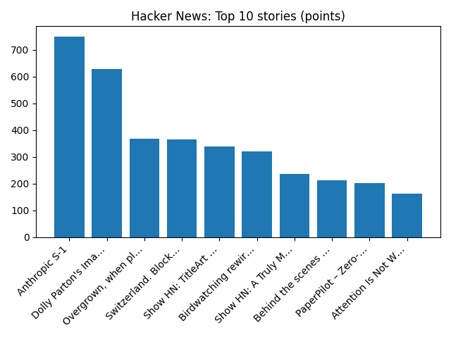

YOUR DAILY INTELLIGENCE BRIEF · 2026-10-26
The world, in focus.
No recent news coverage available.
🌍 Global coverage
🌌 Beyond Earth

M42: The Great Nebula in Orion
📜 On this day
- 2015 A 7.5 magnitude earthquake strikes in the Hindu Kush mountain range in South Asia, killing 399 people and leaving 2,536 people injured.
- 2012 Microsoft made a public release of Windows 8 and made it available on new PCs.
- 2004 Rockstar Games releases Grand Theft Auto: San Andreas for the PlayStation 2 in North America, which sold 12 million units for the PS2, becoming the console's best-selling video game.
- 2003 The Cedar Fire, the third-largest wildfire in California history, kills 15 people, consumes 250,000 acres (1,000 km2), and destroys 2,200 homes around San Diego.
📈 Topic activity
Source health: 24/24 healthy
View original detailed report
Daily Knowledge Garden — 2026-10-26
🧭 Daily Summary
Global coverage includes How 'Lula's Army' WhatsApp chat helped turn Brazil election around; Serbia's new leaders face host of tough challenges - Reuters; Whatever the outcome of Israel's election, its policies toward the Palestinians will largely endure - AP News. Local coverage includes Donald Kuser Obituary (2026) - Strasburg, VA - Northern Virginia Daily - Legacy | Obituary; Nexus234 career fair to be held Thursday in Manassas - InsideNoVa.
🌍 Global News (cross-source)
- How 'Lula's Army' WhatsApp chat helped turn Brazil election around — BBC — World
- Serbia's new leaders face host of tough challenges - Reuters — Reuters — Headlines (Google News)
- Whatever the outcome of Israel's election, its policies toward the Palestinians will largely endure - AP News — AP — Headlines (Google News)
- Anthropic warns of 'catastrophic risk' to humankind ahead of blockbuster share listing — BBC — World
- Nigeria's Ebola patient on medical evacuation flight to Switzerland, condition stable - Reuters — Reuters — World (Google News)
🏙️ Local News
- Donald Kuser Obituary (2026) - Strasburg, VA - Northern Virginia Daily - Legacy | Obituary — Google News — Northern Virginia
- Nexus234 career fair to be held Thursday in Manassas - InsideNoVa — Google News — Northern Virginia
- Northern Virginia Community College workforce training programs could be your mid-career pivot - The Business Journals — Google News — Northern Virginia
- Dems sense pickup chances in Va., even after failed redistricting - FOX 5 DC — Google News — Northern Virginia
- Alexandria police investigating ICE deportation graffiti as bias incident - NBC4 Washington — Google News — Northern Virginia
🚀 Hacker News (Top 5)
- Anthropic S-1 — 750 points, 683 comments
- Dolly Parton's Imagination Library — 629 points, 105 comments
- Overgrown, when plants invade your abandoned tabs — 369 points, 124 comments
- Switzerland. Block by block. At 1:1 scale — 365 points, 169 comments
- Show HN: TitleArt – Make text like it's 1997 — 338 points, 63 comments

🌍 Wikipedia — On This Day (selected)
- 2015 — A 7.5 magnitude earthquake strikes in the Hindu Kush mountain range in South Asia, killing 399 people and leaving 2,536 people injured.
- 2012 — Microsoft made a public release of Windows 8 and made it available on new PCs.
- 2004 — Rockstar Games releases Grand Theft Auto: San Andreas for the PlayStation 2 in North America, which sold 12 million units for the PS2, becoming the console's best-selling video game.
- 2003 — The Cedar Fire, the third-largest wildfire in California history, kills 15 people, consumes 250,000 acres (1,000 km2), and destroys 2,200 homes around San Diego.
- 2002 — Approximately 50 Chechen terrorists and 150 hostages die when Russian special forces troops storm a theater building in Moscow, which had been occupied by the terrorists during a musical performance three days before.
🎲 Wikipedia — Random Article
Miankuh Rural District (Ardal County)
Miankuh Rural District (Persian: دهستان ميانكوه) is in Miankuh District of Ardal County, Chaharmahal and Bakhtiari province, Iran. The previous capital of the rural district was the village of Sar Khun, now a city.
https://en.wikipedia.org/wiki/Miankuh_Rural_District_(Ardal_County)
🌌 NASA APOD
M42: The Great Nebula in Orion
Feed Health
- Reuters — Headlines (Google News): ok (15 articles)
- Reuters — World (Google News): ok (15 articles)
- Reuters — Business (Google News): ok (15 articles)
- BBC — World: ok (15 articles)
- BBC — Tech: ok (15 articles)
- BBC — Business: ok (15 articles)
- BBC — Science: ok (15 articles)
- AP — Headlines (Google News): ok (15 articles)
- AP — Politics (Google News): ok (15 articles)
- AP — Business (Google News): ok (15 articles)
- NPR — Top Stories: ok (10 articles)
- NPR — Politics: ok (10 articles)
- NPR — Business: ok (10 articles)
- NPR — Science: ok (10 articles)
- NPR — Technology: ok (10 articles)
- ScienceNews: ok (15 articles)
- ScienceDaily — Top: ok (15 articles)
- Nature — Technology: ok (15 articles)
- Google News — Northern Virginia: ok (15 articles)
- Google News — Northern Virginia traffic: ok (15 articles)
- Google News — Northern Virginia weather: ok (15 articles)
- Wikipedia — On This Day: ok (10 articles)
- Wikipedia — Random: ok (1 articles)
- NASA — APOD: ok (1 articles)
Runs so far today: 1